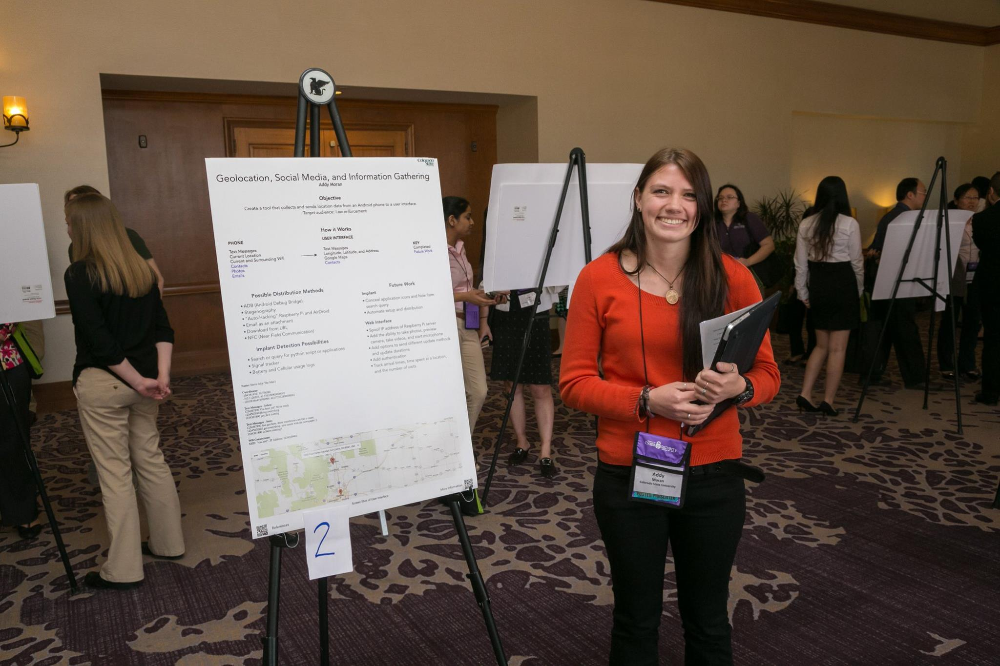

Welcome to Addy Moran's Website
| HOME | ABOUT | PROJECTS |
|---|

Education
Colorado State University, Bachelors of ScienceMajor: Computer Science
Minor: Mathematics
Anticipated Graduation: May 2017
Evergreen High School
Graduation: May 2013
Experience
Cyber Security Engineer Intern(January 2016 - present)
Raytheon, Aurora, CO
Teaching Assistant
(January 2016 - December 2016)
Colorado State University - Computer Science Department
Web Admin
(August 2016 - October 2016)
Colorado State University - Department of Cell and Molecular Biology
Summer Camp Assistant
(June 2016)
Colorado State University - Computer Science Department
Manager & Pizza Maker
(May 2013 - May 2014, October 2014 - March 2016)
Pulcinella Pizzeria, Fort Collins, CO
Waitress/Busser/Hostess/Dishwasher/Prep Cook/Line Cook
(August 2012 - May 2013, May 2014 - October 2014)
Rio Del Sol, Evergreen, CO
Waitress/Busser
(August 2011 - August 2012)
Heritage Square Music Hall, Golden CO